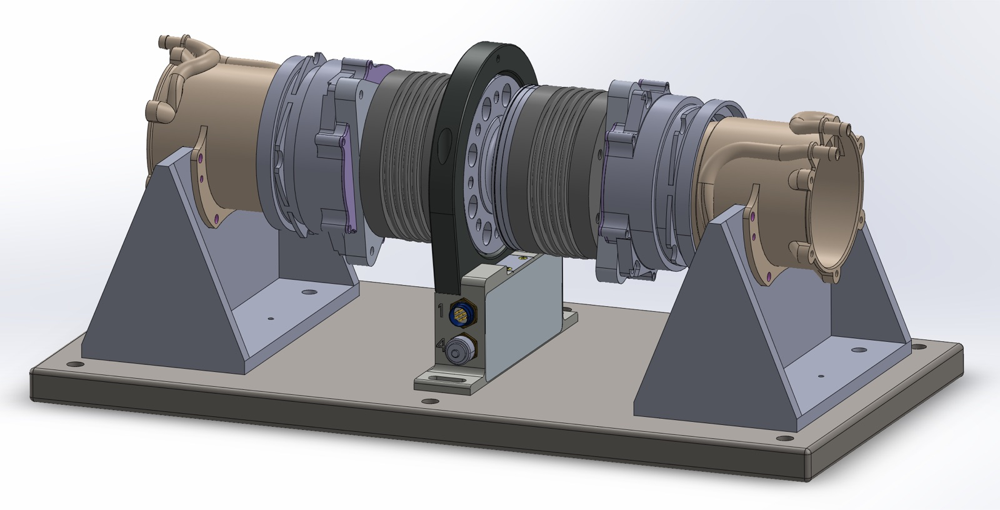
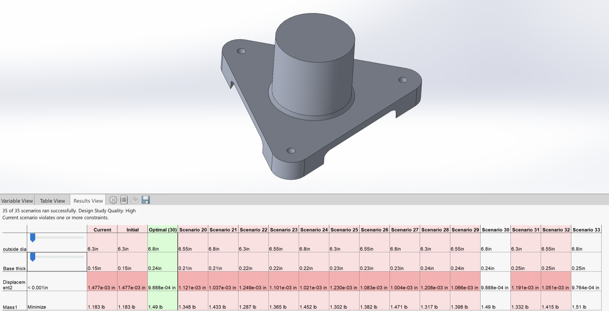
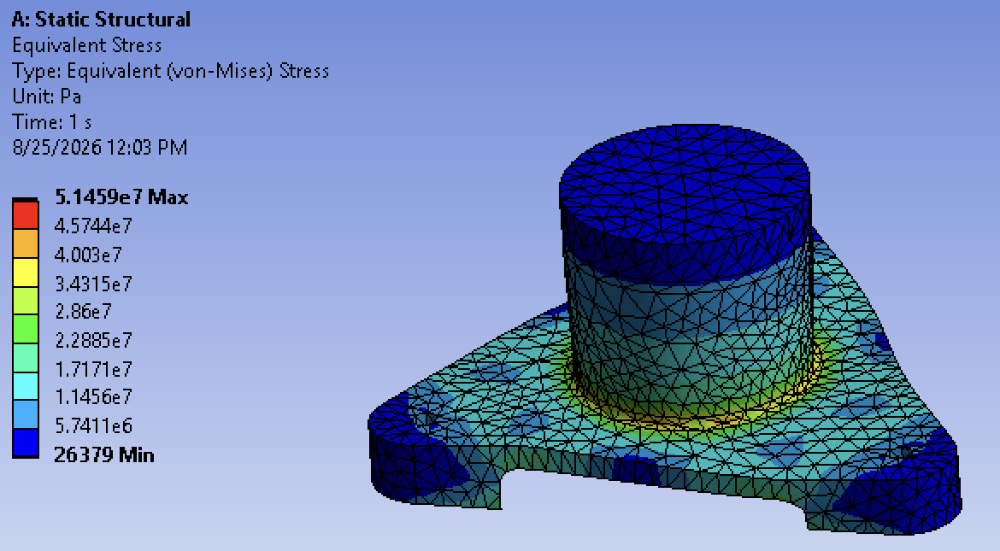

validation lead
MATLAB
SolidWorks
Regenerative dynamometer for in-hub motor testing
Gator Motorsports — University of Florida

The stand the rest of this work sizes. Facing two in-hub motors back-to-back through one transducer lets the rig load a motor with another motor rather than a brake, which is what makes it regenerative.

The plate moved from aluminium to steel for a better balance of stiffness against inertia. This study then settled the two dimensions that choice leaves open: outside diameter and base thickness. Displacement, not mass, was the binding constraint.

Verification rather than exploration. With the dimensions settled, this confirmed the plate carries the 500 N·m load case to a 2× safety factor before anything was cut.
% --- System equivalent stiffness (series) --- inv_k = (1/k_a1) + (1/k_c1) + (1/k_t) + (1/k_c2) + (1/k_a2); k_sys = 1 / inv_k; % --- System total inertia (sum) --- j_sys = j_a1 + j_c1 + j_t + j_c2 + j_a2; % --- Natural Frequency (Hz) --- fn = (1 / (2*pi)) * sqrt(k_sys / j_sys);
The leading seven of the ranked builds. Each is symmetric, so the adapter and coupling columns stand for a matched pair: adapter · coupling · transducer · coupling · adapter.
| # | Adapter | Coupling | Transducer | k (N·m/rad) | J (kg·m²) | fn (Hz) |
|---|---|---|---|---|---|---|
| 1 | 3 Hole, 0.240, 4140 HT | HBK_MBC_1000 | HBK_T22_500 (0.3) | 104033 | 0.00761 | 588.26 |
| 2 | 6 Hole, 0.350, 6061T6 | RW_BK1_500 | HBK_T110_500 (0.03) | 124897 | 0.01330 | 487.72 |
| 3 | 3 Hole, 0.240, 4140 HT | RW_LP1S_500 | HBK_T22_500 (0.3) | 74599 | 0.00813 | 481.96 |
| 4 | 6 Hole, 0.350, 6061T6 | RW_BK1_500 | HBK_T40B_500 (0.05) | 121960 | 0.01340 | 480.15 |
| 5 | 6 Hole, 0.350, 6061T6 | RW_BK1_500 | HBK_T40Lite_500 (0.08) | 121960 | 0.01340 | 480.15 |
| 6 | 6 Hole, 0.350, 6061T6 | RW_BK1_500 | HBK_T12HP_500 (0.02) | 114824 | 0.01450 | 447.87 |
| 7 | 3 Hole, 0.240, 4140 HT | RW_LP1S_700 | HBK_T22_500 (0.3) | 95079 | 0.01213 | 445.50 |
Stiffness and inertia anywhere in the driveline contaminate the transient torque reading, so components could not be chosen one at a time. Ranking whole builds on first natural frequency folds both into a single number. That is why rank 2 loses despite being 20% stiffer than rank 1: it carries 75% more inertia. Pushing that first mode high enough is what lets the rig run dynamic tests at all.